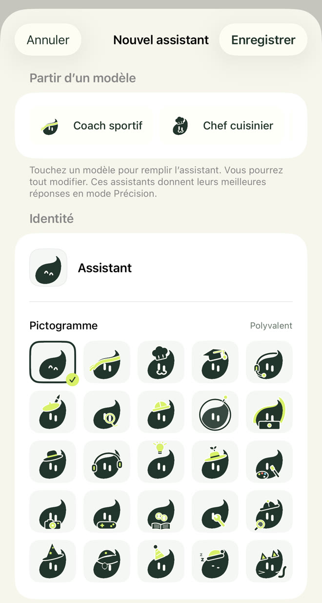
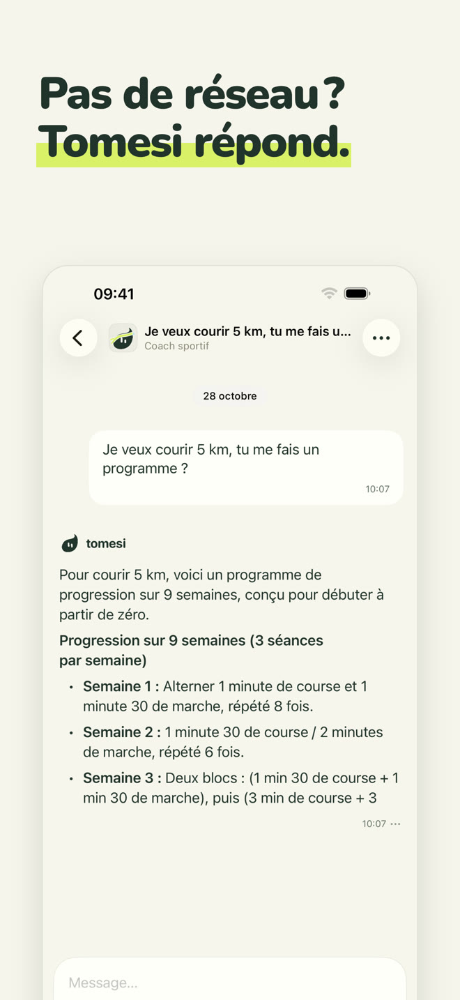
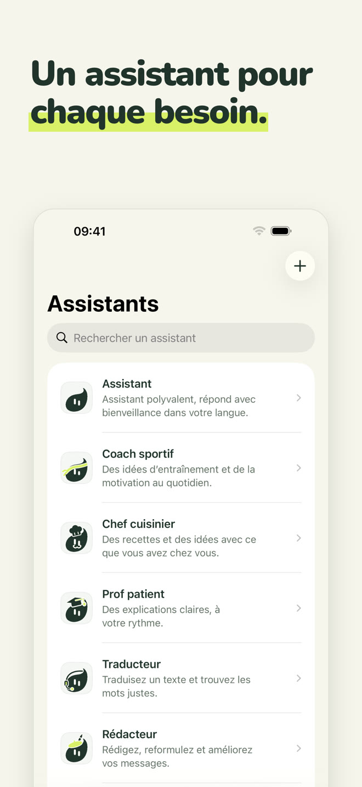
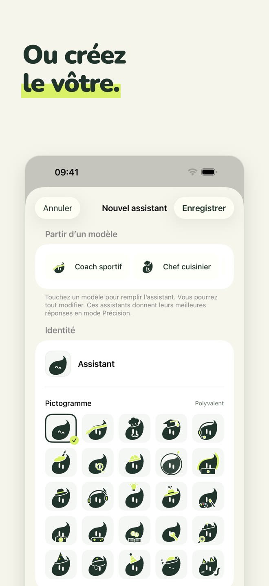
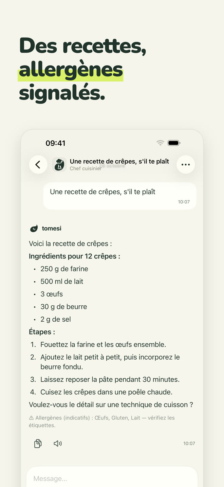
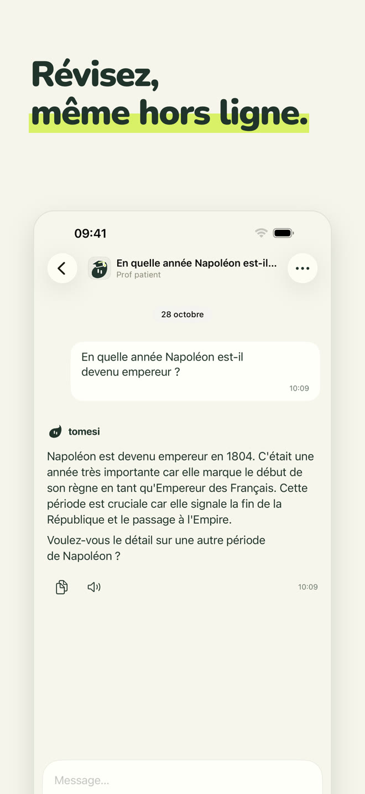
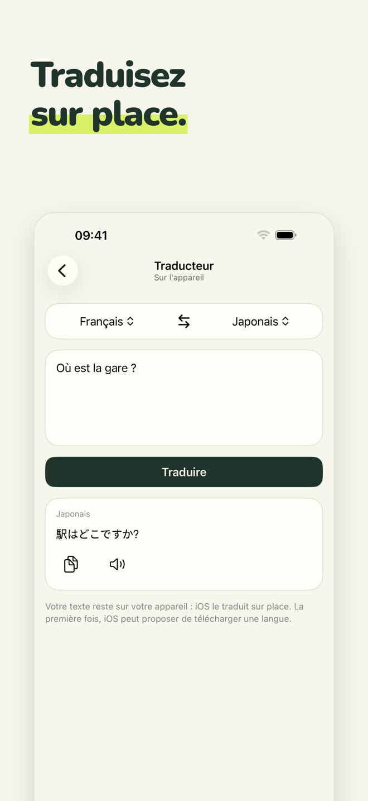
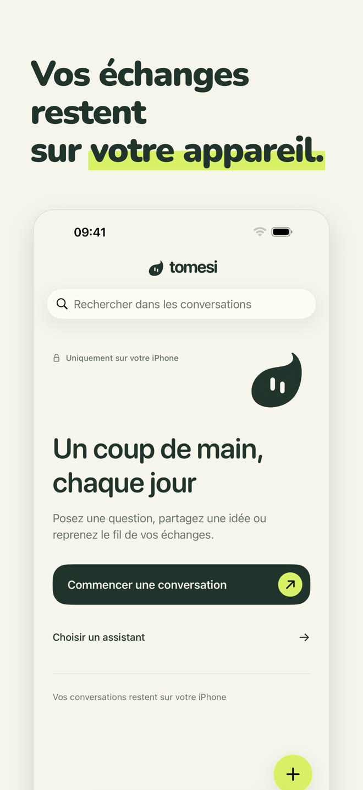

Un assistant IA 100 % local : il tourne sur votre iPhone, en avion, en montagne, à l'étranger. Ce que vous écrivez ne quitte jamais votre téléphone.
Télécharger sur l'App StoreAchat unique · sans compte · sans abonnement
Chaque assistant a son rôle et sa façon de répondre. Choisissez celui qui vous aide, ou parlez simplement à l'assistant polyvalent.
Polyvalent, il répond avec bienveillance dans votre langue.
Des séances adaptées à votre temps et votre matériel, des programmes semaine par semaine.
Des recettes simples avec ce que vous avez, allergènes signalés.
Explique pas à pas, à votre rythme : maths, histoire, sciences, grammaire.
Traduisez un texte entre 13 langues, sur place.
E-mails, messages, courriers ; et la correction de l'orthographe, faute par faute.
Donnez-lui un nom, une personnalité et l'un des 25 pictogrammes de Tomesi : un assistant à votre image, qui profite lui aussi des fiches de l'app.

Un petit modèle ne peut pas tout savoir. Tomesi embarque des fiches relues, qu'il donne à l'assistant au moment de répondre.
Quantités, étapes et allergènes affichés par l'app sous la réponse.
14 pays, plus des fiches de sciences, de géographie et de grammaire en 14 langues.
Et 65 fiches : programmes sur plusieurs semaines, récupération, alimentation, sports.
Comme toute IA, Tomesi peut se tromper : vérifiez les informations importantes.







L'IA est installée sur votre iPhone. Ce que vous écrivez n'est jamais envoyé sur internet ni stocké ailleurs que chez vous.
Pas d'inscription, pas d'e-mail, pas de publicité, aucune donnée collectée.
Pas de serveurs à payer, donc pas d'abonnement : l'app est à vous.
Le mode Précision, facultatif, télécharge un modèle plus puissant (environ 3 Go) pour les réponses qui demandent plus de finesse.
Oui. Une fois l'app et son assistant installés, Tomesi n'a plus besoin d'internet : l'intelligence artificielle tourne entièrement sur votre iPhone. Vous pouvez le vérifier en activant le mode avion.
Nulle part. Ils restent sur votre téléphone. Tomesi n'a ni serveur de conversation, ni compte utilisateur, ni publicité. Voir notre politique de confidentialité.
ChatGPT vit sur des serveurs : il faut une connexion, et vos échanges y transitent. Tomesi vit sur votre iPhone : moins encyclopédique qu'un géant du cloud, mais toujours disponible, totalement privé, et sans abonnement.
Un iPhone avec 8 Go de mémoire vive (iPhone 15 Pro ou plus récent) et iOS 26 ou plus récent. Prévoyez environ 3 Go d'espace libre, et 3 Go de plus pour le mode Précision, facultatif.
Oui, comme toute IA. Les recettes, les dates d'histoire et les fiches intégrées à l'app sont vérifiées et données à l'assistant, ce qui réduit fortement les erreurs, mais vérifiez toujours les informations importantes.
Tomesi est traduit en 13 langues (français, anglais, allemand, espagnol, italien, néerlandais, polonais, portugais, japonais, coréen, chinois simplifié, russe…) et l'assistant comprend et répond dans encore davantage de langues.
Oui. MonIA s'appelle désormais Tomesi. Si vous l'avez déjà achetée, rien à racheter : la mise à jour suffit, et vos conversations restent sur votre téléphone.